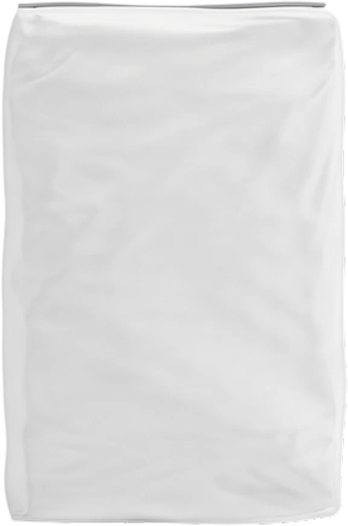
CARBOMAT ECO
Jeden składnik, który pracuje w glebie latami
PoznajWszystkie produkty firmowane logiem CarboHort pochodzą z przetworzenia węgla brunatnego i przeznaczone są do stosowania w każdym gatunku roślin trawiastych, zielnych, krzewów i drzew obecnych w naszych ogrodach i na naszych polach.
Do tych celów nadaje się – po odpowiednim przetworzeniu – jedynie „młody” węgiel brunatny, tzw. lignit, znajdujący się w płytkich złożach, o stosunkowo niedużym stopniu skarbonizowania.
Surowiec pochodzi z naturalnych złóż węgla brunatnego na terenie Polski.
Surowiec frakcjonujemy i odsiewamy w naszym zakładzie w Jordanowie (województwo lubuskie). CARBOMAT ECO powstaje bez żadnej obróbki chemicznej, a CARBOHUMIC to ekstrakt humusowy z lignitu i leonardytu.
Cztery rodziny produktów – sypkie i płynne, do gleby, do podłoża i na liść – dla rolników, sadowników, szkółek i ogrodów.

Jeden składnik, który pracuje w glebie latami
Poznaj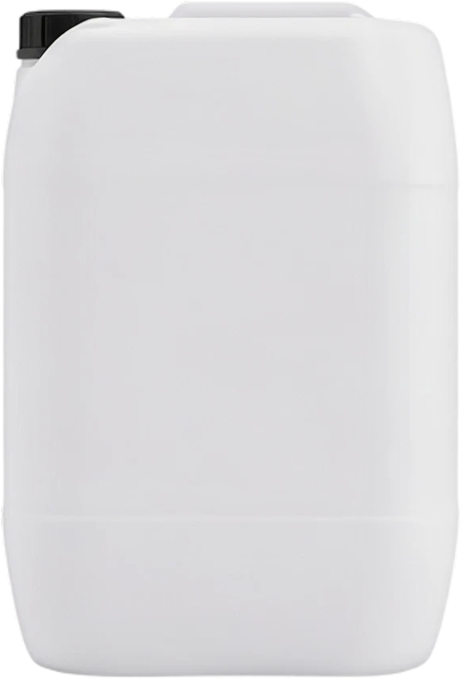
Próchnica w płynie do regeneracji gleby i biostymulacji roślin
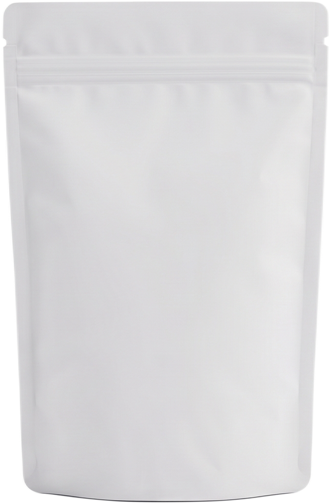
Jeden produkt, trzy zastosowania: kondycjoner, nawóz, biostymulator
Poznaj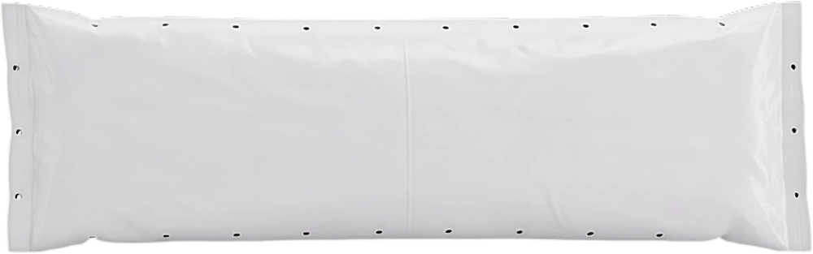
Nowa generacja mat uprawowych dla profesjonalistów
PoznajZastosowanie węgla brunatnego – „czarnego złota” – w uprawie roślin nie jest tematem nowym, lecz niestety mocno zapomnianym. Żartujemy, że to tak naprawdę najstarsza nowość, którą chcemy na nowo przedstawić polskim rolnikom i ogrodnikom. Pierwsze, bardzo proste próby wykorzystania węgla brunatnego do poprawy jakości gleb robiono już w Niemczech i Polsce ponad 100 lat temu. Wojny światowe, a później gwałtowny rozwój przemysłu przerwały te prace aż do lat 50. ubiegłego wieku i dopiero teraz wiedza i nowoczesne technologie pozwalają na pełne wykorzystanie potencjału węgla brunatnego w uprawie roślin.
Jako CarboHort chcemy zmienić szkodliwe dla środowiska i ludzi postrzeganie i użytkowanie węgla brunatnego. Wykorzystywanie tego surowca wcale nie musi ograniczać się wyłącznie do spalania, prowadzącego do marnowania jego potencjału, ale czegoś wręcz przeciwnego, czyli do wsparcia procesu poprawy jakości gleb w Polsce.
Lata z dokumentów: zgłoszeń, decyzji i publikacji.
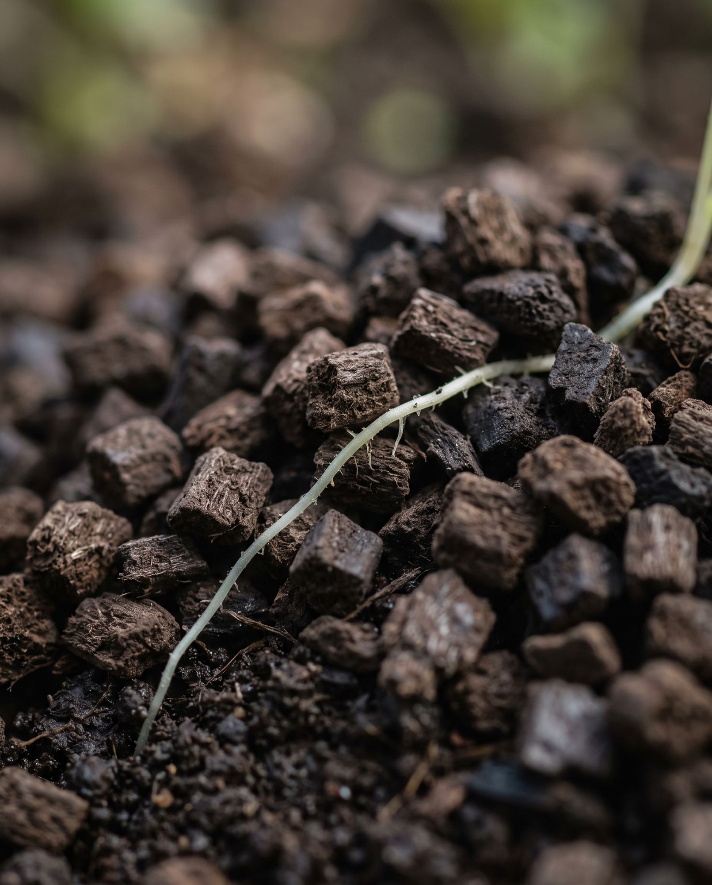
zdjęcie poglądowePolskie zgłoszenie PL 41004814 z 03.11.2014 wyznacza datę pierwszeństwa zgłoszenia patentowego EP 3 014 985 A1 z 2015 roku – podłoża do bezglebowej uprawy roślin z węgla brunatnego.
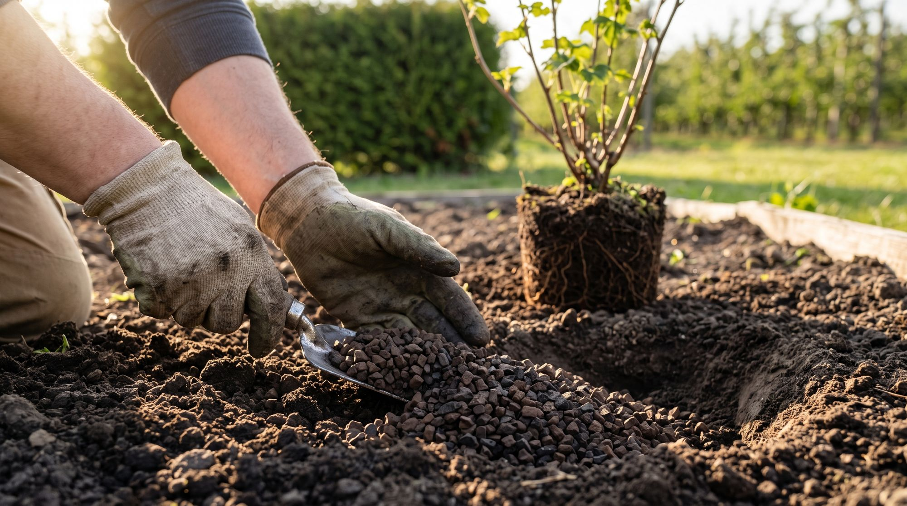
zdjęcie poglądoweCARBOHUMIC otrzymuje Nagrodę im. prof. Szczepana A. Pieniążka za najbardziej innowacyjny i wnoszący istotny wkład w rozwój polskiego ogrodnictwa produkt. W grudniu CARBOMAT ECO dostaje decyzję Ministra Rolnictwa i Rozwoju Wsi G-971/20.
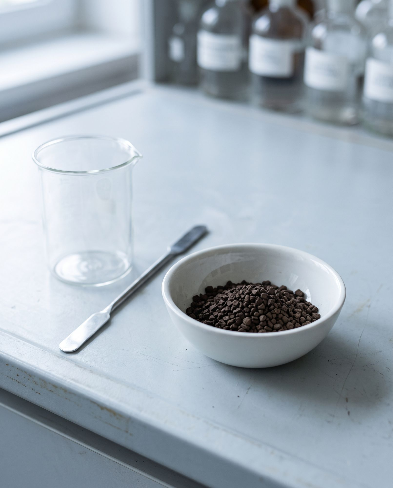
zdjęcie poglądoweW czasopiśmie Agronomy ukazuje się pierwsza z pięciu recenzowanych publikacji o podłożu CARBOMAT (Radosław Łaźny i in., SGGW i Instytut Ogrodnictwa – PIB).
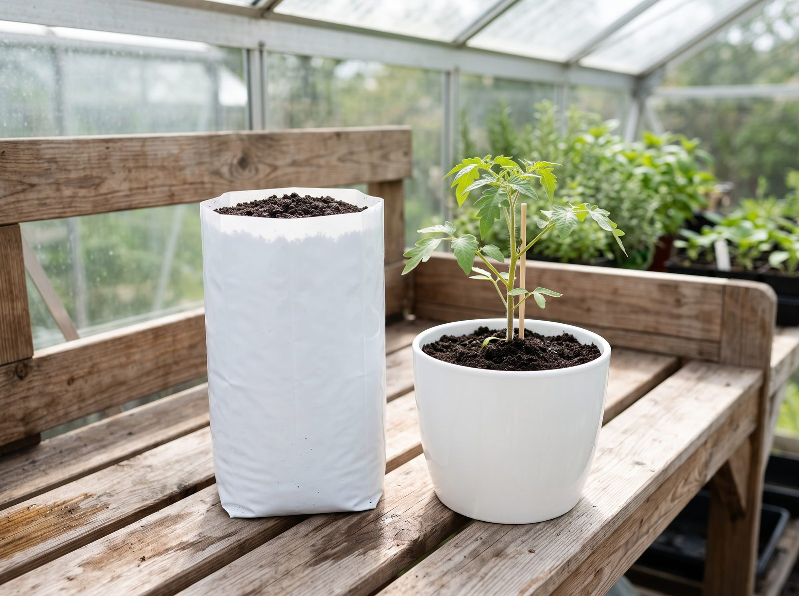
zdjęcie poglądoweW marcu CARBOMAT HUMIC otrzymuje decyzję Ministra Rolnictwa i Rozwoju Wsi G-1528/24.
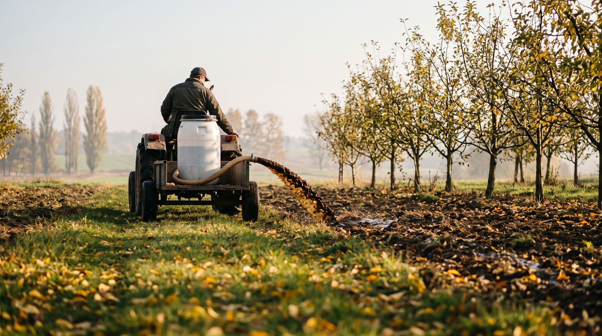
zdjęcie poglądoweW maju decyzję Ministra Rolnictwa i Rozwoju Wsi G-1733/25 otrzymuje CARBOHUMIC CALBOR. Jesienią w programie badawczym Próchnica+ pierwszy pobór próbek gleby i pierwsza aplikacja CARBOHUMIC – plan działań obejmuje lata 2025–2028.
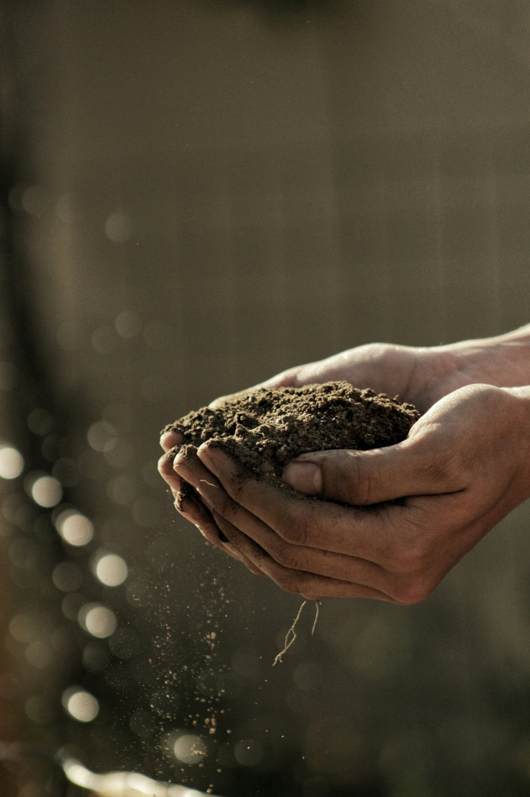
Chcemy zmienić sposób myślenia, pokazać, że węgiel brunatny to nie tylko spalanie i emisja CO2 do atmosfery, a tym samym przyspieszanie globalnego ocieplania klimatu, ale coś wręcz odwrotnego – sekwestracja CO2, która odbywa się z powietrza za sprawą uprawianych roślin, ale też z poziomu gleby poprzez przechwytywanie dwutlenku węgla przez węgiel organiczny / biowęgiel (Corg).
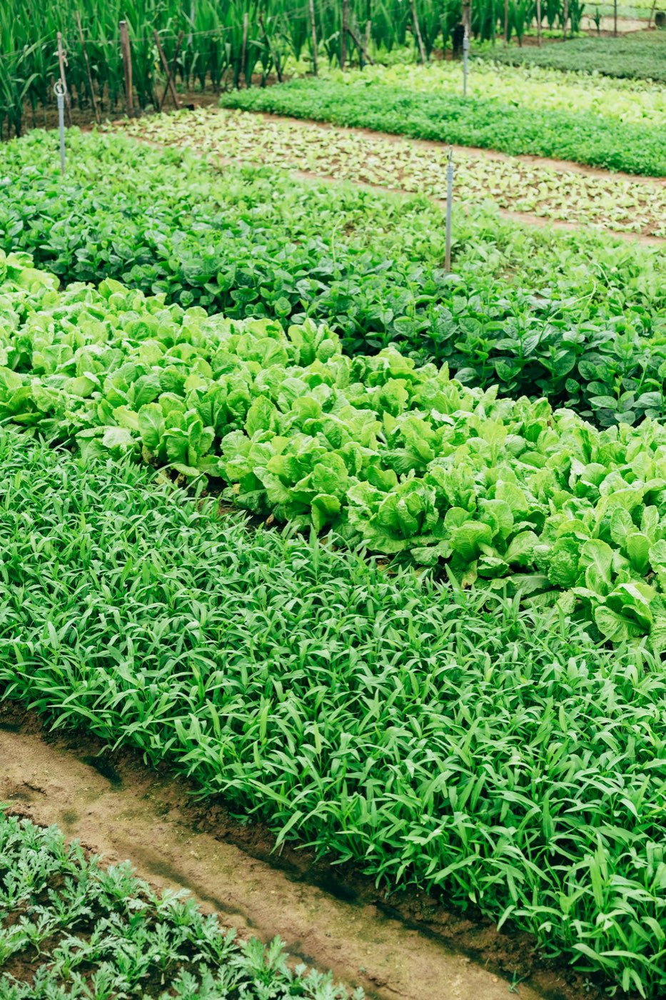
Zależy nam na zmobilizowaniu ludzi do posiadania choćby niewielkich upraw; ogródki przydomowe czy te na dachach budynków, zielniki na parapecie albo tarasie, warzywniki w szkołach – innymi słowy wszystko, co pozwoli poczuć satysfakcję z wyhodowania własnych, smacznych, zdrowych i ekologicznych plonów. Jedząc własne produkty mamy całkowitą pewność co do ich jakości.
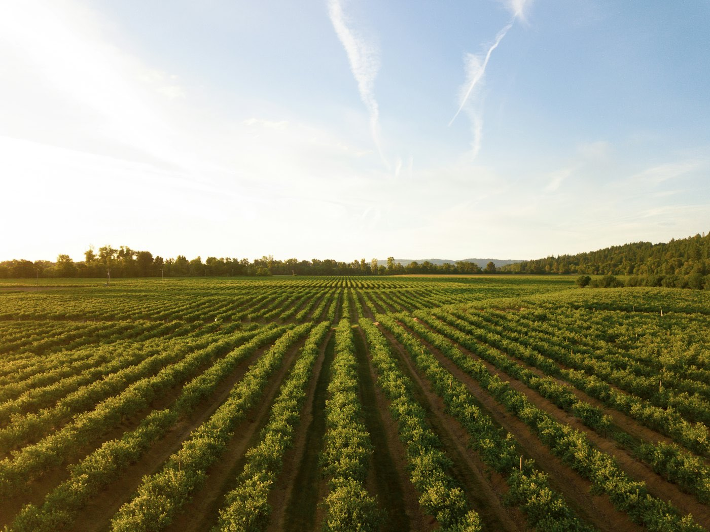
Obecnie zachodzi wiele zjawisk mających bardzo niekorzystny wpływ na otaczające nas środowisko naturalne w tym przede wszystkim gleby. Wymienić należy chociażby niekontrolowaną i nadmierną urbanizację, rozbudowę transportu wysokoemisyjnego czy degradację gleb wskutek intensywnej gospodarki człowieka. Wszystko to sprawia, że powierzchnia ziemi uprawnej na świecie kurczy się rocznie o ok. 1%. Warto w tym miejscu przypomnieć, że na wytworzenie 1 cm gleby w naturalnych warunkach potrzeba 100-500 lat.
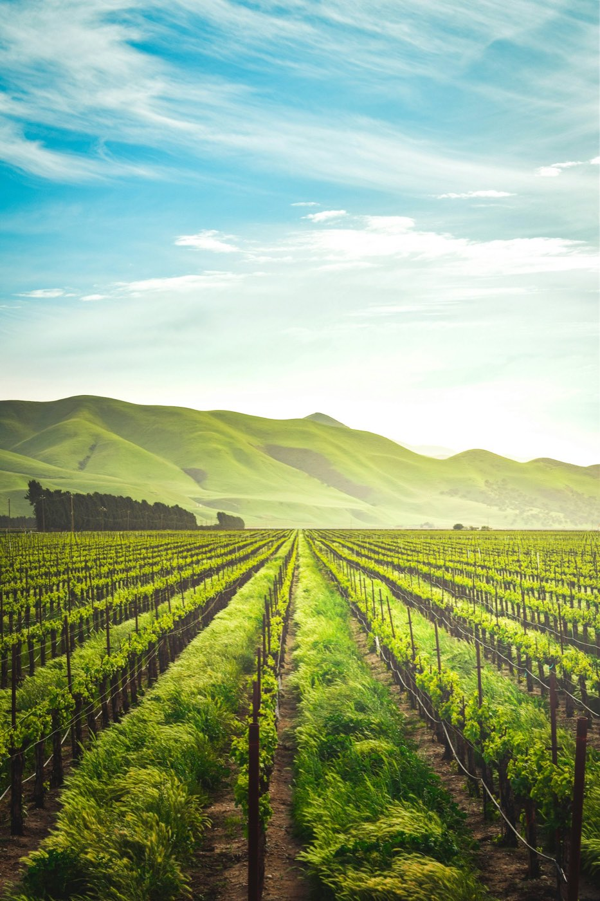
Uważamy, że w produkcji żywności nie ma dróg na skróty. W pogoni za zyskiem, obniżaniem kosztów lub dominującą estetyką upraw dopuściliśmy się ustępstw, które w dłuższej perspektywie negatywnie odbiją się na naszym zdrowiu i otaczającym nas środowisku. Chcemy zmotywować jak największą liczbę producentów żywności do wzięcia odpowiedzialności za zdrowie innych ludzi i otoczenie, w którym żyją. Chcemy także zachęcić obywateli do decydowania się w większości na produkty lokalne, unikając tym samym dalekobieżnych transportów i masowych fabryk warzyw i owoców.
Oddajemy przyrodzie dużo więcej niż pożyczamy. Oprócz niezliczonej ilości roślin posadzonych z wykorzystaniem naszych produktów, wspieramy sadzenie nowych drzew wspólnie z posadzimy.pl
Jesteśmy firmą rodzinną z Jordanowa. Osoba, która odbiera telefon, odpowiada też za produkt i za to, co Ci doradzi – i za rok będzie tą samą osobą.
Sprawy handlowe – współpraca biznesowa, zamówienia hurtowe, dobór produktów i doradztwo
bio do uzupełnieniaSprzedaż i dystrybucja międzynarodowa; autor artykułów Strefy wiedzy
bio do uzupełnieniaMarketing i media społecznościowe
bio do uzupełnieniaZakupy, rozliczenia i obsługa zamówień detalicznych
bio do uzupełnieniaSpedycja i transport, obsługa zamówień detalicznych
bio do uzupełnieniaAdministracja
bio do uzupełnieniaDoradztwo uprawowe (Plon Expert)
Ekspert w dziedzinie międzynarodowej produkcji roślin warzywnych i jagodowych. Naukowiec, praktyk i doradca w dziedzinie upraw roślin warzywnych i jagodowych metodą hydroponiczną z wykorzystaniem podłoża stałego oraz produkcji warzyw w polu metodą konwencjonalną i ekologiczną.
Autor i współautor publikacji naukowych. Specjalizuje się także w rekultywacji gleb i ograniczaniu negatywnego wpływu działalności człowieka na mikrobiom glebowy oraz samą glebę.
Właściciel firmy Plon Expert, prowadzącej doradztwo agronomiczne w Europie i poza jej granicami. To niezależna firma agronomiczna, oferująca gotowe rozwiązania dla produkcji warzywniczej i jagodowej.
Propaguje świadomą produkcję żywności oraz działania zmierzające do ograniczenia negatywnego wpływu rolnictwa i ogrodnictwa na środowisko naturalne.
Niezależny ekspert rolniczy
Doktor nauk rolniczych, absolwent Akademii Rolniczej we Wrocławiu, z 45-letnim stażem pracy bezpośrednio w rolnictwie jak i w korporacjach pracujących na rzecz rolnictwa w Polsce, Europie oraz globalnie, gdzie zajmował się rozwojem produktów i nowych technologii rolniczych oraz bezpieczeństwem środowiska.
Obecnie ekspert start-up’ów biotechnologicznych oraz podmiotów zajmujących się innowacyjnymi technologiami rolniczymi, autor szeregu publikacji (ekspertyzy, prezentacje, artykuły, szkolenia, warsztaty) w zakresie Rolnictwa 4.0, „Europejskiego Zielonego Ładu”, nowych technologii w rolnictwie, regeneracji i odbudowy żyzności gleby, redukcji emisji gazów cieplarnianych etc.
Współzałożyciel i członek zarządu Polskiego Stowarzyszenia Zrównoważonego Rolnictwa i Żywności, autor i współautor, a także główny redaktor Poradnika Rolnictwa Zrównoważonego oraz Akademii Zrównoważenia – lekcji on-line.
Autor szeregu publikacji, prezentacji, szkoleń i tłumaczeń publikacji o żyzności i regeneracji gleb rolniczych, sadowniczych, rolnictwie węglowym, zdrowiu owadów zapylających, likwidacji pozostałości po zabiegach ochrony roślin. Tłumacz na język polski książki „Rewitalizacja gleby. Diagnoza, użyźnienie, ochrona” autorstwa Francisa Bucaille.
Ekspert niezależny – wspiera nas merytorycznie, nie prowadzi sprzedaży produktów Carbohort.
Trzy produkty mają decyzje Ministra Rolnictwa i Rozwoju Wsi, trzy mają certyfikat ekologiczny, a podłoże CARBOMAT – zgłoszenie patentowe i publikacje recenzowane. Numery dokumentów podajemy wprost.
Odbierze ktoś z tej strony, nie infolinia. Zadzwoń lub napisz do właściwego działu – a jeśli chcesz sprzedawać nasze produkty, zostań partnerem.
Zespół CarboHort„Ziemia nie należy do nas. Pożyczamy ją od naszych dzieci.”